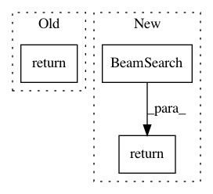

7685a96e027fbec01ec11847e1a0e8e4a6040ee6,onmt/translate/translator.py,Translator,translate_batch,#Translator#Any#Any#Any#,524
Before Change
keep_topk=self.sample_from_topk,
return_attention=attn_debug or self.replace_unk)
else:
return self._translate_batch(
batch,
src_vocabs,
self.max_length,
min_length=self.min_length,
ratio=self.ratio,
n_best=self.n_best,
return_attention=attn_debug or self.replace_unk)
def _run_encoder(self, batch):
src, src_lengths = batch.src if isinstance(batch.src, tuple) \
else (batch.src, None)
After Change
else:
// TODO: support these blacklisted features
assert not self.dump_beam
decode_strategy = BeamSearch(
self.beam_size,
batch_size=batch.batch_size,
pad=self._tgt_pad_idx,
bos=self._tgt_bos_idx,
eos=self._tgt_eos_idx,
n_best=self.n_best,
global_scorer=self.global_scorer,
min_length=self.min_length, max_length=self.max_length,
return_attention=attn_debug or self.replace_unk,
block_ngram_repeat=self.block_ngram_repeat,
exclusion_tokens=self._exclusion_idxs,
stepwise_penalty=self.stepwise_penalty,
ratio=self.ratio)
return self._translate_batch_with_strategy(batch, src_vocabs,
decode_strategy)
def _run_encoder(self, batch):
src, src_lengths = batch.src if isinstance(batch.src, tuple) \
else (batch.src, None)
In pattern: SUPERPATTERN
Frequency: 3
Non-data size: 3
Instances
Project Name: OpenNMT/OpenNMT-py
Commit Name: 7685a96e027fbec01ec11847e1a0e8e4a6040ee6
Time: 2019-11-20
Author: 419344739@qq.com
File Name: onmt/translate/translator.py
Class Name: Translator
Method Name: translate_batch
Project Name: dpressel/mead-baseline
Commit Name: 865eb00c32dbaa6d43ed2c06044befd6b2cedc8d
Time: 2019-11-17
Author: dpressel@gmail.com
File Name: python/baseline/pytorch/seq2seq/decoders.py
Class Name: RNNDecoder
Method Name: beam_search
Project Name: dpressel/mead-baseline
Commit Name: 865eb00c32dbaa6d43ed2c06044befd6b2cedc8d
Time: 2019-11-17
Author: dpressel@gmail.com
File Name: python/baseline/pytorch/seq2seq/decoders.py
Class Name: TransformerDecoderWrapper
Method Name: beam_search